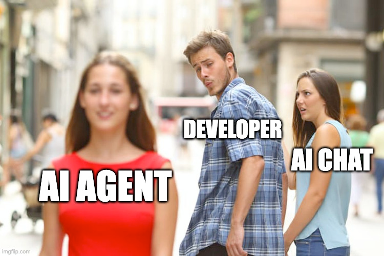
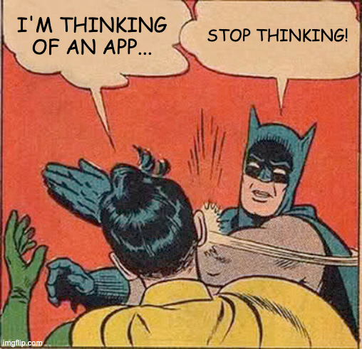

AI-Powered Productivity:
Building Smarter Software, Faster
Kuidja / Segning - 26/04/2025
V042... It evolves so fastüòÖ
The Pressure Cooker
Complexity ⬆️
Larger projects, more dependencies.
Deadlines ⬇️
Faster release cycles, tighter schedules.
Tech ü§Ø
Constant learning, new frameworks every month!
AI: Your New Toolkit
Supercharge Your Workflow!
Code ⚡️
Generate boilerplate, auto-complete code snippets.
Refactor üî®
Improve code quality, identify potential bugs.
Docs üìö
Automatically generate documentation from code.
Debug üêõ‚û°Ô∏è‚úÖ
Smart suggestions, faster bug fixes.
Better again?
MCP: AI's Context Key
The Missing Link for Intelligent AI
Data ➡️ Secure Link (MCP) ➡️ AI
MCP is a glue to (almost) everything
Combining Multiple Data Sources for Richer Insights
MCP in a nutshell
- Data Source Abstraction: MCP servers abstract the underlying data source, exposing a standardized API to AI models.
- Query Transformation: They translate high-level AI queries into data source-specific queries.
- Security and Access Control: They enforce granular access control policies to protect sensitive data.
- Data Transformation and Enrichment: Optionally, they transform and enrich data before it's delivered to the AI model.
Integration
Almost everywhere
MCP Server: Data Security
Ensuring Secure Access to Your Data:
Access Control
Limit access based on roles and permissions.
Authentication
Verify the identity of the AI model.
Privacy First
Protect sensitive data and comply with regulations.
AI Code Generation ✨
Database ➡️ React Component
AI generates UI from database schema, automatically!
AI Refactoring üßπ
Clean, Readable Code
Improve code quality with AI-powered refactoring.
Don't fall into the trap
ü§∑üèø‚Äç‚ôÇÔ∏è
AI Documentation üìù
Instant & Accurate
Generate API documentation with a single command!
Productivity üöÄ
More Code, Less Time
AI enables faster development and higher quality code.
Engineer ‚û°Ô∏è Architect ü߆
Think Strategy, Not Just Syntax
Shift your focus from implementation to design and strategy.
Think Carefully ü§î
Important Considerations for AI Adoption:
Security? ✅
Secure your data and AI systems.
Ethics? ✅
Use AI responsibly and ethically.
Learning? ✅
Stay up-to-date with the latest AI advancements.
Start Building! üõ†Ô∏è
Experiment, Implement, Share!
The future of software development is AI-powered. Start exploring today!